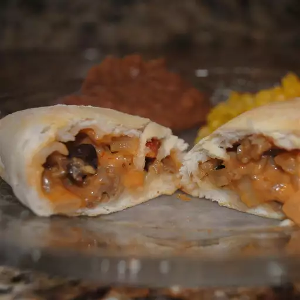

Home
Salsa Biscuit Chicken
A mixture of chicken, salsa, onion and cheese rolled up in biscuit dough, then baked hot and fresh.

Important info
- Prep Time: 20 mins
- Cook Time: 10 mins
- Total Time: 30 mins
- Servings: 3
- Yield: 3 servings
Ingredients
- 3 skinless, boneless chicken breast halves
- 1 onion, chopped
- 1 cup salsa
- 2 cups shredded Cheddar cheese
- 1 (12 ounce) can refrigerated biscuit dough
Steps
- Preheat oven to 350 degrees F (175 degrees C). Bring a saucepan of lightly salted water to a boil. Add chicken breasts, and boil until easily shredded, about 20 minutes.
- Saute onion in a medium saucepan until soft. Remove from heat and stir in salsa, then stir in cheese until melted. Add chicken and mix all together.
- Roll out biscuits individually, adding a little of the chicken mixture to each one; then roll up, secure with toothpicks and place on a lightly greased cookie sheet.
- Bake at 350 degrees F (175 degrees C) for about 10 minutes, or until biscuits are golden and hot.